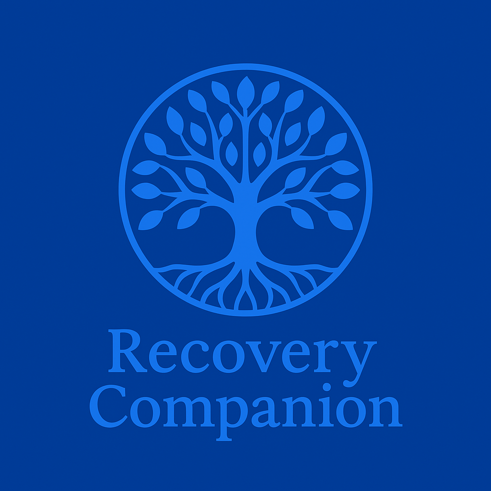

Recovery Companion


Become a Tester
Want early access? Drop your email below and I’ll add you to the tester list.
Version: 1.1.0
Platform: Android + iOS
Author: Matthew Schardt (Schardt Industries)
License: Proprietary / Internal Testing Build
Overview
Recovery Companion helps people in addiction recovery stay mindful, track progress, and connect with supportive resources.
It combines journaling, sobriety tracking, relapse-prevention tools, local help discovery, a growing community hub, and a verified meeting locator — all in one private, secure app.
v1.1.0 marks a major milestone: every tab is functional and stable, with the new Meetings Finder powered by a live ingestion and normalization pipeline for AA/NA meeting data.
Features (as of v1.1.0)
Profile
- Supabase Auth with email confirmation & password reset.
- Editable username, DOB, and bio.
- Avatar upload with secure Supabase Storage.
- Row-level security (RLS) in
public.profiles.
Ask (Social Hub)
- Forum: threaded Q&A, emoji reactions.
- Friends: requests, blocking/unblocking.
- Realtime: Supabase channels keep things live.
- Moderation: Edge function + SQL triggers.
Beat Craving
- Relax Coach: breathing and PMR routines with animation.
- Meditate: offline morning/night quotes.
- Games: Memory, Snake, Brick Breaker.
Sobriety Tracker
- Live “Sober for…” counter.
- Medals for 1 day → 50 years.
- Milestone notifications.
Get Help
- Quick-call 911 & 988 buttons.
- Nearby hospitals & rehab centers.
- Emergency contacts saved locally.
Meetings Finder (NEW)
- AA / NA meeting locator with live ingestion.
- Data pipeline from BMLT/TSML to Supabase
meetings_master.
- Filters: program, day, online, nearby.
- Favorites + admin-reviewed submissions.
What’s New in v1.1.0
Meetings Finder
meetings_master table with UUIDs & indexes.- Automated scripts for ingestion & normalization.
- In-app filters, favorites, add-meeting flow.
Games Polishing
- Brick Breaker physics + paddle reflection.
- Snake gesture control.
- Memory scoring updates.
Relax & Meditate
- Improved animation and pacing.
- Offline quote rotation.
Back to Projects
Contact
Support, Privacy & Terms